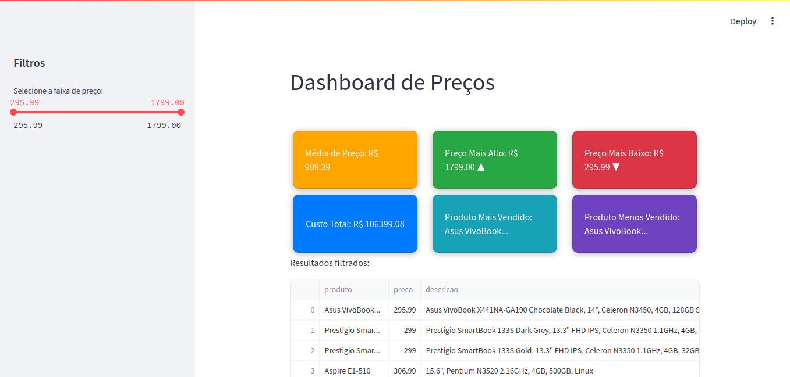

Otimizando a Gestão de Preços no Varejo com Python: Aumente sua Lucratividade
Varejo e Atacado
Ciência de Dados
Inteligência Artificial
Autor
Janderson B Abreu
Data de Publicação
22 de outubro de 2024
1. Introdução
A precificação estratégica é uma das principais ferramentas que um varejista possui para influenciar as vendas e maximizar a lucratividade. No mundo do varejo e atacado, onde a concorrência é acirrada e as margens de lucro estão frequentemente sob pressão, a capacidade de ajustar os preços de forma eficaz se torna um diferencial crucial. Segundo Kotler e Keller (2016) , “o preço é um dos mais poderosos instrumentos de marketing e, quando bem utilizado, pode ser a chave para a sobrevivência e o crescimento de uma empresa”.Por outro lado, a precificação manual enfrenta desafios significativos, como a dependência de intuições ou regras de thumb que podem não refletir a realidade do mercado. A otimização de preços baseada em dados não apenas melhora a precisão na definição de preços, mas também proporciona insights sobre a elasticidade da demanda, ajudando os varejistas a maximizar suas margens. Um estudo da McKinsey mostra que empresas que implementam estratégias de precificação baseadas em dados podem ver um aumento de até 20% na lucratividade .
2. Coleta e Preparo de Dados Relevantes
A otimização de preços começa com a coleta de dados relevantes . Vários fatores influenciam o preço ideal de um produto, incluindo:
Custos de produção
Preços dos concorrentes
Demanda do consumidor
Sazonalidade
Dados demográficos Essas informações podem ser coletadas de diversas fontes, como relatórios internos, pesquisas de mercado e até mesmo através de web scraping . Usar bibliotecas Python como Beautiful Soup permite que os varejistas extraíam automaticamente preços de concorrentes, oferecendo uma visão competitiva do mercado.
Exemplo de Web Scraping com Beautiful Soup
Aqui está um exemplo de como você pode usar o Beautiful Soup para extrair preços de um site de concorrência:
import requestsfrom bs4 import BeautifulSoupimport pandas as pd# URL de exemplo de um site didáticourl ='https://webscraper.io/test-sites/e-commerce/allinone/computers/laptops'# Fazer a requisição HTTPresposta = requests.get(url)# Verificar se a requisição foi bem-sucedida (status code 200)if resposta.status_code ==200:# Análise da página com BeautifulSoup sopa = BeautifulSoup(resposta.text, 'html.parser')# Encontrar os nomes dos produtos (tags a com a classe title) produtos = sopa.find_all('a', class_='title')# Encontrar os preços dos produtos (tags h4 com a classe correta) precos = sopa.find_all('h4', class_='price')# Encontrar as descrições dos produtos (tags p com a classe description) descricoes = sopa.find_all('p', class_='description')# Encontrar as classificações dos produtos (tags div com a classe ratings) classificacoes = sopa.find_all('div', class_='ratings')# Verificar se encontramos os dados necessáriosif produtos and precos and descricoes and classificacoes:# Preparar lista de dados lista_dados = []for produto, preco, descricao, classificacao inzip(produtos, precos, descricoes, classificacoes): nome_produto = produto.text.strip() preco_produto = preco.text.strip() descricao_produto = descricao.text.strip()# Extrair o número de estrelas da classificação estrelas = classificacao.find_all('span', class_='glyphicon glyphicon-star') num_estrelas =len(estrelas)# Extrair o número de reviews num_reviews = classificacao.find('p').text.strip()# Adicionar os dados à lista lista_dados.append({'produto': nome_produto,'preco': preco_produto,'descricao': descricao_produto,'classificacao': num_estrelas,'num_reviews': num_reviews })# Criar DataFrame com os dados df = pd.DataFrame(lista_dados)# Salvar os dados em um arquivo CSV df.to_csv('precos_completos.csv', index=False)print(f"Arquivo 'precos_completos.csv' criado com sucesso!")# Exibir os primeiros 5 produtos para confirmaçãoprint(df.head())else:print("Dados insuficientes encontrados.")else:print(f"Erro ao acessar a página. Status code: {resposta.status_code}")
Após coletar os dados, a limpeza e manipulação são essenciais. Utilizar a biblioteca Pandas permite que você organize e prepare esses dados para a modelagem, removendo inconsistências e valores ausentes.
Exemplos de Limpeza de Dados com Pandas
import pandas as pd# Carregar os dados raspadosdf = pd.read_csv('precos_completos.csv')# Verificar as colunas do DataFrameprint("Colunas disponíveis no DataFrame:", df.columns)# Função para limpar e converter os preçosdef limpar_preco(preco):# Remover símbolo de moeda e múltiplos valores concatenados preco = preco.replace('$', '') # Remover '$' preco = preco.split('$')[0] # Caso haja múltiplos preços concatenados, pega o primeirotry:# Converter para floatreturnfloat(preco)exceptValueError:# Caso não seja possível converter, retornar NaNreturn pd.NA# Aplicar a função de limpeza à coluna de preçosdf['preco'] = df['preco'].apply(limpar_preco)# Remover duplicatas com base nas colunas disponíveisdf = df.drop_duplicates(subset=['produto', 'descricao', 'preco', 'classificacao', 'num_reviews'])# Preencher valores ausentes de forma inteligentedf['preco'] = df['preco'].fillna(df['preco'].mean())# Preencher classificações ausentes com a médiaif'classificacao'in df.columns: df['classificacao'] = df['classificacao'].fillna(df['classificacao'].mean())# Preencher número de reviews ausente com 0if'num_reviews'in df.columns: df['num_reviews'] = df['num_reviews'].fillna(0)# Verificar o DataFrame limpoprint(df.head())# Salvar o DataFrame limpodf.to_csv('precos_limpo.csv', index=False)
Com os dados prontos, é hora de aplicar algoritmos de aprendizado de máquina para construir modelos de precificação. Métodos como regressão linear , regressão polinomial e Random Forest são algumas das abordagens eficazes.
Exemplo de Regressão Linear
Aqui está um exemplo básico de como implementar uma regressão linear usando a biblioteca Scikit-learn :
import pandas as pdfrom sklearn.model_selection import train_test_splitfrom sklearn.linear_model import LinearRegressionfrom sklearn.preprocessing import OneHotEncoderfrom sklearn.compose import ColumnTransformerfrom sklearn.pipeline import Pipeline# Carregar os dados limposdf = pd.read_csv('precos_limpo.csv')# Tratar valores ausentesdf['preco'].fillna(df['preco'].mean(), inplace=True)# Verifique se as colunas 'rating' e 'num_avaliacoes' estão presentesif'rating'in df.columns: df['rating'].fillna(df['rating'].mean(), inplace=True)if'num_avaliacoes'in df.columns: df['num_avaliacoes'].fillna(0, inplace=True)else: df['num_avaliacoes'] =0# Ou outra lógica que você preferir# Ajustar a seleção das variáveis independentes (X) com base nas colunas disponíveisX_cols = ['classificacao'] # Ajuste aqui com base nas colunas que fazem sentidoX = df[X_cols]y = df['preco']# One-hot encoding para variáveis categóricas (por exemplo, 'classificacao')preprocessador = ColumnTransformer(transformers=[ ('cat', OneHotEncoder(), ['classificacao'])], remainder='passthrough')# Criar pipeline de pré-processamento e modelopipeline = Pipeline(steps=[ ('preprocess', preprocessador), ('modelo', LinearRegression())])# Dividir em conjunto de treinamento e testeX_treino, X_teste, y_treino, y_teste = train_test_split(X, y, test_size=0.2, random_state=42)# Treinar o modelopipeline.fit(X_treino, y_treino)# Fazer previsõesprevisoes = pipeline.predict(X_teste)# Exibir as primeiras 10 previsões e as 10 primeiras linhas do conjunto de testeprint("As primeiras 10 previsões são:", previsoes[:10])print("\nAs 10 primeiras linhas do conjunto de teste:")print(X_teste.head(10))
As primeiras 10 previsões são: [912.87774194 912.87774194 912.87774194 912.87774194 912.87774194
912.87774194 912.87774194 912.87774194 912.87774194 912.87774194]
As 10 primeiras linhas do conjunto de teste:
classificacao
44 0
4 0
53 0
42 0
10 0
85 0
72 0
94 0
36 0
11 0
/tmp/ipykernel_15802/881320131.py:12: FutureWarning:
A value is trying to be set on a copy of a DataFrame or Series through chained assignment using an inplace method.
The behavior will change in pandas 3.0. This inplace method will never work because the intermediate object on which we are setting values always behaves as a copy.
For example, when doing 'df[col].method(value, inplace=True)', try using 'df.method({col: value}, inplace=True)' or df[col] = df[col].method(value) instead, to perform the operation inplace on the original object.
A comparação entre diferentes modelos pode ser feita utilizando métricas de performance como RMSE e R² , permitindo que o varejista escolha o modelo mais eficaz.
4. Implementação e Monitoramento
Após a criação do modelo, a próxima etapa é a implementação . Integrar os modelos de precificação com os sistemas de gestão existentes é essencial para a aplicação prática. Além disso, é fundamental monitorar continuamente o desempenho dos preços.Para isso, dashboards interativos podem ser criados usando bibliotecas como Dash ou Streamlit , permitindo que os gestores visualizem em tempo real as variações de preço e suas consequências nas vendas. Abaixo, apresentamos um exemplo básico de um dashboard em Streamlit:
Exemplo de Dashboard com Streamlit
Salve como app.py e faça: streamlit run app.py no terminal e o resultado sera uma dashboard que analisa produtos em intervalo de preços

import pandas as pdimport streamlit as stimport plotly.express as px# Carregar os dados limposdf = pd.read_csv('precos_limpo.csv')# Tratar valores ausentesdf['preco'] = df['preco'].fillna(df['preco'].mean())# Streamlitst.title('Dashboard de Preços')st.markdown('<link rel="stylesheet" href="https://stackpath.bootstrapcdn.com/bootswatch/4.5.2/united/bootstrap.min.css">', unsafe_allow_html=True)st.sidebar.header('Filtros')# Filtro por faixa de preçopreco_min, preco_max = st.sidebar.slider('Selecione a faixa de preço:', min_value=float(df['preco'].min()), max_value=float(df['preco'].max()), value=(float(df['preco'].min()), float(df['preco'].max())))# Filtrar o DataFramedf_filtrado = df[ (df['preco'] >= preco_min) & (df['preco'] <= preco_max)]# Cards de informaçõesmedia_preco = df_filtrado['preco'].mean()preco_maximo = df_filtrado['preco'].max()preco_minimo = df_filtrado['preco'].min()# Cálculos dinâmicos para custo totalcusto_total = df_filtrado['preco'].sum() # Custo total# Calcular somatória de preços por produtosoma_precos_por_produto = df_filtrado.groupby('produto')['preco'].sum().reset_index()# Identificar produto mais e menos vendidoproduto_mais_vendido = soma_precos_por_produto.loc[soma_precos_por_produto['preco'].idxmax()]['produto'] ifnot soma_precos_por_produto.empty else'N/A'produto_menos_vendido = soma_precos_por_produto.loc[soma_precos_por_produto['preco'].idxmin()]['produto'] ifnot soma_precos_por_produto.empty else'N/A'# Estilizando os cardsst.markdown(""" <style> .card { border-radius: 10px; padding: 20px; margin: 5px; /* Reduzir margem */ box-shadow: 0 2px 10px rgba(0, 0, 0, 0.3); color: white; display: flex; justify-content: center; align-items: center; height: 100px; flex-grow: 1; } .media {background-color: #FFA500;} /* Laranja */ .maximo {background-color: #28a745;} /* Verde */ .minimo {background-color: #dc3545;} /* Vermelho */ .lucro {background-color: #007bff;} /* Azul */ .mais-vendido {background-color: #17a2b8;} /* Ciano */ .menos-vendido {background-color: #6f42c1;} /* Roxo */ </style>""", unsafe_allow_html=True)# Layout para os cards ocupando toda a larguracol1, col2, col3 = st.columns([1, 1, 1])with col1: st.markdown(f'<div class="card media">Média de Preço: R$ {media_preco:.2f}</div>', unsafe_allow_html=True)with col2: st.markdown(f'<div class="card maximo">Preço Mais Alto: R$ {preco_maximo:.2f} ▲</div>', unsafe_allow_html=True)with col3: st.markdown(f'<div class="card minimo">Preço Mais Baixo: R$ {preco_minimo:.2f} ▼</div>', unsafe_allow_html=True)# Novos cardscol4, col5, col6 = st.columns([1, 1, 1])with col4: st.markdown(f'<div class="card lucro">Custo Total: R$ {custo_total:.2f}</div>', unsafe_allow_html=True)with col5: st.markdown(f'<div class="card mais-vendido">Produto Mais Vendido: {produto_mais_vendido}</div>', unsafe_allow_html=True)with col6: st.markdown(f'<div class="card menos-vendido">Produto Menos Vendido: {produto_menos_vendido}</div>', unsafe_allow_html=True)# Exibir resultadosst.write("Resultados filtrados:")st.dataframe(df_filtrado)# Gráficosst.subheader("Distribuição de Preços e Contagem por Classificação")# Layout para os gráficos ocupando toda a larguracol7, col8 = st.columns([1, 1])with col7: st.bar_chart(df_filtrado['preco'], use_container_width=True)with col8: classificacao_contagem = df_filtrado['classificacao'].value_counts() st.bar_chart(classificacao_contagem, use_container_width=True)# Gráfico de Boxplotst.subheader("Análise Gráfica")fig_box = px.box(df_filtrado, y='preco', title='Boxplot de Preços')st.plotly_chart(fig_box, use_container_width=True)
A criação de um dashboard não só facilita a visualização dos dados, mas também permite a tomada de decisões rápidas e informadas. Assim, os varejistas podem ajustar preços em tempo real com base no desempenho de vendas e na concorrência.
5. Conclusão
A otimização de preços baseada em dados é um caminho eficaz para aumentar a lucratividade e a competitividade no mercado. Com a combinação certa de coleta de dados, modelagem preditiva e monitoramento contínuo, os varejistas podem não apenas responder às flutuações do mercado, mas também antecipá-las. Ao implementar essas técnicas, os varejistas estão melhor posicionados para maximizar suas margens de lucro e melhorar a satisfação do cliente.Como afirma Baker (2018) , “um preço bem definido é mais do que apenas um número; é uma estratégia que pode influenciar o comportamento do consumidor e impulsionar as vendas”.
Referências
Baker, M. J. (2018). Marketing Strategy and Management. Palgrave Macmillan.
Kotler, P., & Keller, K. L. (2016). Marketing Management. Pearson.
McKinsey & Company. (2020). Pricing Excellence: How to Boost Profitability.
Davenport, T. H. (2013). Analytics at Work: Smarter Decisions, Better Results. Harvard Business Review Press.